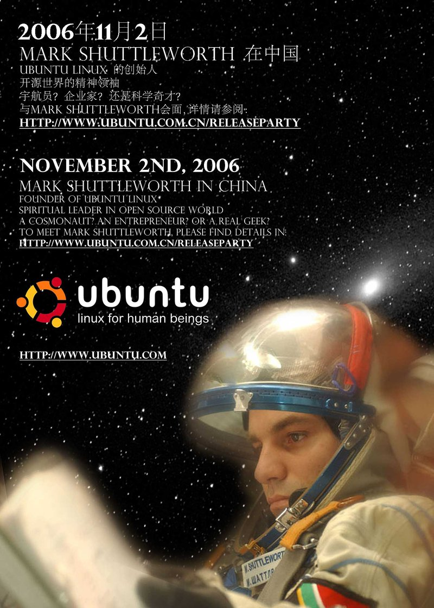

Mark Shuttleworth, dot-com billionaire, space tourist, and creator of Ubuntu Linux
The GPL (General Public License) allows anyone to access Debian's code and take it in a new direction. That is what each of the 130 derivatives of Debian have done. However, most of that work has so far only involved relatively small changes, mostly subsetting Debian, with little fragmentation of the Debian community or brand. All that changed when Ubuntu was created.
What began in 2004 has become the most popular and fastest-growing Linux distribution system. While its name is bizarre, Ubuntu is all the buzz in the Linux community. Free software luminary Eric Raymond made a very public statement when he switched from Red Hat to Ubuntu in February 2007. Dell announced in May 2007 that they were going to offer Ubuntu on several Dell computers, very big news indeed. The latest public numbers are that as of November 2006, Ubuntu had eight million users and was doubling every eight months.
Ubuntu comes from the African language Bantu and is a humanist ideology:
A person with ubuntu is open and available to others, affirming of others, does not feel threatened that others are able and good, for he or she has a proper self-assurance that comes from knowing that he or she belongs in a greater whole and is diminished when others are humiliated or diminished, when others are tortured or oppressed. —Desmond TutuIn short, Ubuntu means: “humanity towards others”, or “I am because we are.” Lovely. Shuttleworth, a South African himself, with $10 million — a minuscule amount by the standards of the well-funded IT industry — and a copy of the Debian code, hired ten of its best volunteers to work full-time.
Ubuntu took Debian's solid base of packages and added a few innovations: they ship every six months, much more frequently than Debian's two to three-year release cycle, and they focus on ease of use and better support for proprietary drivers.
Perhaps for the first time, a Linux for human beings was created, Ubuntu's motto.
Today, Linux (and computing in general) is mostly for male human beings.
Periodically, Ubuntu designates stable releases for which they will provide paid support. This is a different model from that employed by Red Hat and Novell, which provide support only in their Enterprise versions that are separate products with separate life cycles.
With Ubuntu, the code is free, and there is all sorts of community support on forums and blogs, in short, a search engine is your friend. English majors can follow the steps to fix a problem, even if they don't fully understand them! In fact, it is often faster to type in a query to a search engine than to call someone who will usually ask many silly questions (“Is your printer on?”)
Shuttleworth's success demonstrates that it is possible to foster a community of volunteers around a team of hard-core, full-time, paid developers. Ubuntu's full-timers spend their hours tracking down the hard kernel bugs and maintaining the larger, complicated packages, which often have more arcane gruntwork associated with them. The volunteer community today focuses on maintaining the bug list, creating artwork, translating the user interface, and adding applications that Ubuntu is happy to provide on their servers but not necessarily fully support. With a large user base, if everyone just chips in a little, a lot of progress can be achieved.
Many Ubuntu users are passionate about the potential of free software and want to help, but they are unable to contribute back in any technical way. This is one of the reasons why donations of money should be used for free software, a topic I will discuss more in the next chapter.
Perhaps the biggest reason why money isn't donated to free software is that hardly anyone is asking. On Ubuntu's website, they encourage you to volunteer your time, but they do not ask for money.
Just $1 per computer per year would cover Mark Shuttleworth's costs to run Ubuntu. Computers cost between $500 and $2,000, so five dollars for the five years you might keep your new computer is not very much to ask!